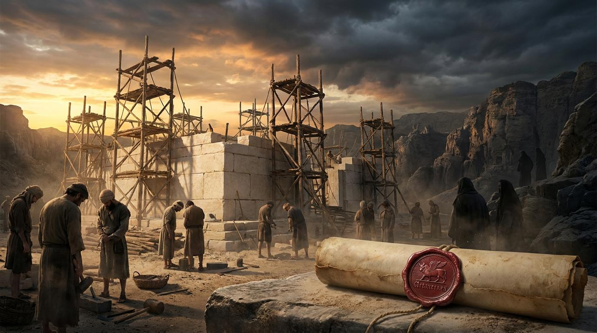

一、偽裝的善意
經文：拉 4:1-3
關鍵原文
- 敵人 (צַר / Tsar)：原意為「壓迫者、對手、使人受限制的」。
- 尋求 (דָּרัשׁ / Darash)：混合主義的信仰，並非專一敬畏。
關鍵解析
領袖們看重「純正的信仰」勝過「豐富的資源」與「快速的進度」。屬靈的建造不能依賴屬世的妥協。
【佳句名言】
「一個被世界認可、與世界妥協的教會，對世界將毫無影響力可言。」
—— 陶恕 (A.W. Tozer)

「我們為我們的神建殿，與你們無干，我們自己要為耶和華—以色列的神協力建造。」
—— 以斯拉記 4:3
主阿，當我們立志為祢建造、尋求生命與教會的復興時，我們知道仇敵必不甘休。求祢賜給我們屬靈的分辨力，看穿那些偽裝成光明的妥協誘惑；賜給我們屬天的勇氣，勝過仇敵散播的恐懼與攪擾；並賜給我們堅忍的信心，即使在事奉停滯、遭遇權勢打壓的黑夜裡，依然深信祢的主權從未動搖。奉主耶穌基督得勝的名求，阿們。
經文：拉 4:1-3
領袖們看重「純正的信仰」勝過「豐富的資源」與「快速的進度」。屬靈的建造不能依賴屬世的妥協。
「一個被世界認可、與世界妥協的教會，對世界將毫無影響力可言。」
—— 陶恕 (A.W. Tozer)
經文：拉 4:4-5
仇敵轉換策略為心理戰與消耗戰——「使手發軟」與「賄買謀士」。這提醒我們，神聖的呼召常伴隨著持續的屬靈爭戰。
李文斯頓在日記寫下：「這是一位守信譽的君王所說的話。我不走了。」
「恐懼和信心無法同時在我們的心中作主。當我們懼怕人時，是因為我們不夠敬畏神。」
—— 約翰·加爾文
經文：拉 4:6-24
表面上，第24節是一個令人絕望的句號——「工程就停止了」。但神允許停滯，不代表神失敗。在停工的十幾年裡，神正在預備先知，也預備了接下來的王。神的延遲不是神的拒絕。
Case Study
約翰·班揚（John Bunyan）在牢獄十二年寫下《天路歷程》。權勢能關住他的身體，但無法阻止神成就更深遠的建造。
提摩太·凱勒：
「神並非袖手旁觀；祂是一位偉大的編劇，正在把生命中的停頓，編織進榮耀的救贖故事裡。」
拉4:1-24：當建殿遇見阻礙：在逆境中堅守神聖的呼召
弟兄姊妹們，當我們願意為神大發熱心，無論是投入教會服事、在職場作見證、或是決心重建破碎的家庭時，我們往往會有一種天真的期待：既然是為神做事，理當一帆風順。然而，以斯拉記第四章殘酷卻真實地打破了這個迷思。當以色列人歡歡喜喜地立下聖殿根基時，他們迎來的不是掌聲，而是猛烈的攻擊。
經文一開始，仇敵並沒有拿著刀劍出現，而是帶著笑臉和資源。他們說：「請容我們與你們一同建造；因為我們尋求你們的神，與你們一樣。」(拉4:2) 這是何等巨大的誘惑！
「我們為我們的神建殿，與你們無干，我們自己要為耶和華—以色列的神協力建造，是照波斯王塞魯士所吩咐的。」(拉4:3)
領袖們果斷地拒絕了。很多時候，撒但最厲害的武器不是逼迫，而是同化。我們必須在真理上站穩，拒絕一切看似能幫助我們、卻會侵蝕信仰根基的妥協誘惑。
仇敵知道，只要搞垮我們的內心，就不需要動手摧毀工程。今天，仇敵也常用經濟的壓力、流言蜚語、或是健康的問題，來「擾亂」我們。但我們不要忘記加爾文的提醒：當我們懼怕人時，是因為我們不夠敬畏神。當恐懼來襲，我們必須重新仰望那位呼召我們的神。
最後，仇敵動用了政治與法律的力量。國王下達了停工令。「於是，在耶路撒冷神殿的工程就停止了...」
神允許的停滯，不等於神計畫的終止。
願我們擁有分辨的智慧拒絕妥協，擁有屬天的勇氣勝過恐懼，並在人生的停滯期，依然堅定仰望神的主權。阿們。
寫下一個妥協的試探並拒絕它：本週勇敢地向上司或合作對象說「不」。
進行「恐懼轉移」的禱告：將最讓你「手發軟」的事寫在紙上，壓在聖經之下。
在停滯處做一件微小忠心的事：恢復固定的靈修，在不能做大事時，忠心於小事。
「神從未應許我們一個沒有風暴的航程，但祂保證我們一定會安全抵達目的地。」
—— 大衛·鮑森 (David Pawson)
「當基督呼召一個人的時候，祂是叫他來死...向著自己的私慾與世界的妥協而死。」
—— 潘霍華 (Dietrich Bonhoeffer)
「神在苦難的黑夜裡為我們點亮的星星，比在白晝時賜給我們的太陽更加明亮。」
—— 司布真 (Charles Spurgeon)
「教會最致命的危機，不是來自外部攻擊，而是來自內部對真理的妥協。」
—— 約翰·史托德 (John Stott)
「在一個崇尚快速見效的世界裡，基督徒的生命與建造，是一種『長期的順服』。」
—— 畢德生 (Eugene Peterson)
「我們的身分不是由遭遇的挫折決定的；我們最深的身分，是『神所愛的孩子』。」
—— 盧雲 (Henri Nouwen)
網路資料可能出錯，請小心查證、謹慎使用。